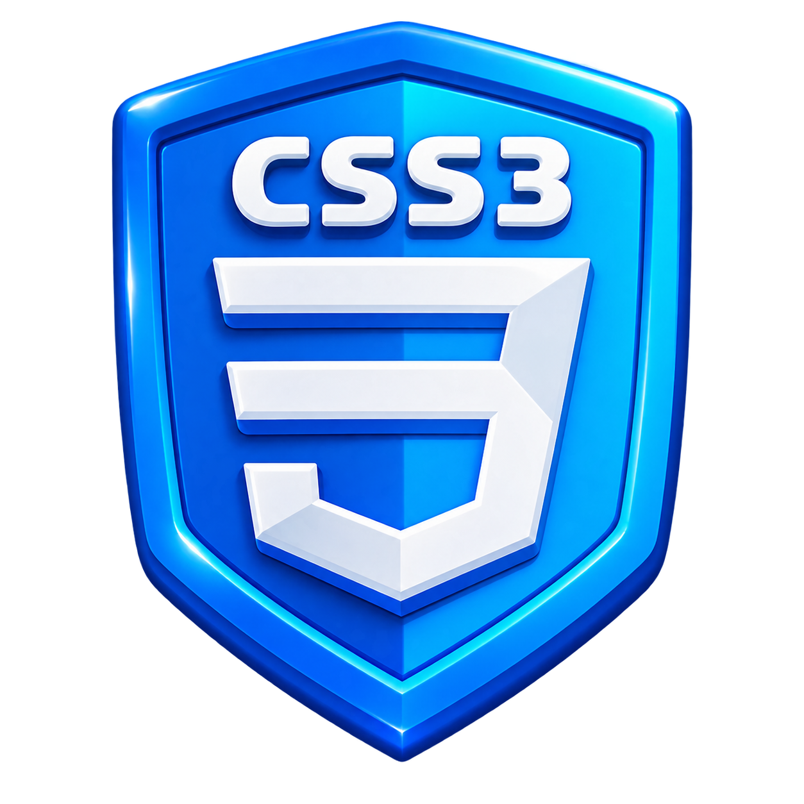

LANGAGE DEVELOPPEMENT WEB
| Technologie | Rôle principal |
|---|---|
| HTML5 | Structurer le contenu |
| CSS3 | Présenter et disposer les éléments |
| JavaScript | Rendre la page interactive |
| Ces technologies coopèrent pour réaliser un site Web statique. | |
Systèmes et technologies de l'informatique

| Technologie | Rôle principal |
|---|---|
| HTML5 | Structurer le contenu |
| CSS3 | Présenter et disposer les éléments |
| JavaScript | Rendre la page interactive |
| Ces technologies coopèrent pour réaliser un site Web statique. | |